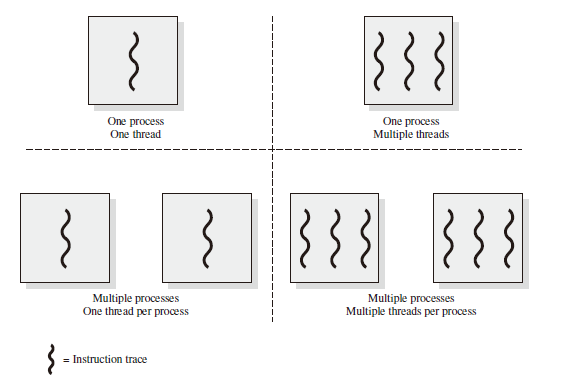

Overview
Introduction
Exception Handling
Hardware Interrupt
Exception
System Call
Memory Management
Fixed Partitioning
Dynamic Partitioning
Buddy System
Paging
Segmentation
Virtual Memory
Preliminary Concepts
Replacement Policy
Local Replacement
Basic Algorithms
Optimal
- Selects for replacement that page for which the time to the next reference is the longest.
- Impossible to implement
- Benchmark algorithm
Least recently used (LRU)
- Replaces the page in memory that has not been referenced for the long time.
- Does nearly as well as the optimal policy.
- Implement by linked list or stack, ordered by visit time, with high time complexity.
First-in-first-out (FIFO)
- Process as a circular buffer
- May cause belady anomaly
- Easy to implement
Clock
- Organize frames in a circular buffer.
- First loaded or subsequently referenced, use bit = 1.
- When replace, find a frame with use bit = 0, and reset use bit of frames that each scan encounters to 0.
- If all of the frames have a use bit of 1, then the pointer will make one complete cycle through the buffer, setting all the use bits to 0, and stop at its original position, replacing the page in that frame.
- An implementation of LRU using FIFO mechanism.
Example

Infrequent Algorithms
Improved Clock
- Not accessed recently, not modified (u = 0; m = 0)
- Accessed recently, not modified (u = 1; m = 0)
- Not accessed recently, modified (u = 0; m = 1)
- Accessed recently, modified (u = 1; m = 1)
- Beginning at the current position of the pointer, scan the frame buffer. During this scan, make no changes to the use bit. The first frame encountered with (u = 0; m = 0) is selected for replacement.
- If step 1 fails, scan again, looking for the frame with (u = 0; m = 1). The first such frame encountered is selected for replacement. During this scan, set the use bit to 0 on each frame that is bypassed.
- If step 2 fails, the pointer should have returned to its original position and all of the frames in the set will have a use bit of 0. Repeat step 1 and, if necessary, step 2. This time, a frame will be found for the replacement.
In brief, the transitions of each state are shown in the table below,
| Use Bit | Modify Bit | Next State |
|---|---|---|
| 0 | 0 | swap |
| 0 | 1 | 0 0 |
| 1 | 0 | 0 0 |
| 1 | 1 | 0 1 |
Least Frequently Used
- Replace the block in the set that has experienced the fewest references.
- could be implemented by associating a counter with each block.
- When a block is brought in, it is assigned a count of 1; with each reference to the block, its count is incremented by 1. When replacement is required, the block with the smallest count is selected.
- Make poor replacement choices when certain blocks are referenced relatively infrequently overall, but frequently in some short intervals.
Belady Anomaly
Conflicts between the FIFO algorithm and the memory dynamic feature.
Global Replacement
A global replacement policy considers all unlocked pages in main memory as candidates for replacement, regardless of which process owns a particular page.
Working Set Strategy
-
Working Set: The working set with parameter $\Delta$ for a process at virtual time $t$, which we designate as $W(t, \Delta)$, is the set of pages of that process that have been referenced in the last $\Delta$ virtual time units.
-
Resident Set:
-
Algorithm
Relation between Page Size and Page
Processes and Threads
Processes
Concepts
Structure
- 代码
- 数据
- 状态寄存器：CR0, IP
- 通用寄存器：AX, BX, CX
- An associated set of system resources
Feature
- 动态性
- 并发性
- 独立性
- 制约性
Relation between programs
Abstract of Programs in executive states
Program = Static executive file
Process = Program + executive states
A program may own different process
Process Control Block
操作系统用 PCB 来进程的基本状态
基本状态
包含：
- 进程的标识信息
- 处理机现场保存
- 进程的控制信息
At any given point in time, while the program is executing, this process can be uniquely characterized by a number of elements, including the following:
- Identifier: A unique identifier associated with this process, to distinguish it from all other processes.
- State: If the process is currently executing, it is in the running state.
- Priority: Priority level relative to other processes.
- Program counter: The address of the next instruction in the program to be executed.
- Memory pointers: Include pointers to the program code and data associated with this process, plus any memory blocks shared with other processes.
- Context data: These are data that are present in registers in the processor while the process is executing.
- I/O status information: Includes outstanding I/O requests, I/O devices assigned to this process, a list of files in use by the process, and so on.
- Accounting information: May include the amount of processor time and clock time used, time limits, account numbers, and so on.
控制信息
-
调度和状态信息： 调度进程和处理及使用情况
-
进程间通信信息： 进程间通信相关的各种标识
-
储存管理信息
-
进程所用资源
-
有关数据结构的连接信息
组织形式
- 链表：同一状态进程的 PCB 组成链表
- 索引表：统一状态进程的 PCB 被同一索引指向
Process States
Creation
When a new process is to be added to those currently being managed, the OS builds the data structures used to manage the process, and allocates address space in main memory to the process.
Reasons
- New batch job
- Created by OS to provide a service
- Interactive log-on
- Spawned by existing process
Ready
Blocked/Waiting
A process that cannot execute until some event occurs, such as the completion of an I/O operation.
Reasons
- 请求并等 待系统服务
- 启动某种操作无法马上完成
- 需要的数据没有到达
强占
高优先级进程就绪 进程运行时间已结束
唤醒
结束
正常/错误/致命错误/被其他进程所杀
操作系统在 中断 中处理进程
以 Sleep() 为例，创建 -> 就绪 -> 运行 -> 等待 -> 操作系统时钟中断 ...
Running, ready and blocked states are three basic states.
Five-state Process Module: New, ready, running, blocked and exit.
等待状态结束后重新回到就绪队列。
Suspended Processes
把一个进程从内存转到外存，低优先级让位高优先级。
- 等待挂起 (Block-suspend)
- 就绪挂起 (Ready-suspend)
Activated Processes
把一个进程从外存转到内存
就绪挂起 -> 就绪：没有就绪进程或挂起或有高优先级的挂起进程
等待挂起 -> 等待
State Queue
根据不同优先级，就绪队列和等待队列可能有多个。
Threads
多进程的问题：
- 如何通信、如何共享数据
- 系统开销较大，涉及进程的创建、进程的终止等
Concepts
线程是进程的一部分，描述指令流执行状态，它是进程中指令执行流的最小单位，是 CPU 调度的基本单位。 堆栈 (Heap) 资源不能共享 线程是资源调度的基本单位，因此同一个进程内的线程共享其资源。
Features
- Resource ownership: A process includes a virtual address space to hold the process image; The process image is the collection of program, data, stack, and attributes defined in the process control block. From time to time, a process may be allocated control or ownership of resources,such as main memory, I/O channels, I/O devices, and files. The OS performs a protection function to prevent unwanted interference between processes with respect to resources.
- Scheduling/execution: The execution of a process follows an execution path (trace) through one or more programs. This execution maybe interleaved with that of other processes. Thus, a process has an execution state (Running, Ready, etc.) and a dispatching priority, and is the entity that is scheduled and dispatched by the OS.
Pros and Cons
优点：
- 一个进程同时存在线程。
- 多线程之间可以并发。
- 线程间共享地址空间和文件等资源。
缺点：一个进程崩溃，其他进程也会崩溃。

Implementation Methods
- User-Level threads: 用户级的线程库函数来完成线程的管理
- Kernel-Level threads
- Lightweight Process
User-Level Threads
- 不依赖于操作系统
- 在用户空间实现线程机制
- 同一进程内的用户线程切换速度快
- 允许每个进程拥有自己的线程调度算法
不足：
- 线程发起系统调用而阻塞时，整个线程进入等待。
- 不支持基于线程的处理机抢占，除非当前运行线程主动放弃
- 只能按进程分配 CPU 时间
Kernel-Level Threads
由内核通过系统调用实现的线程机制，由内核实现线程的创建、终止和管理。
特点：
- 由内核维护 PCB 和 TCB
- 线程执行系统调用而被阻塞不影响其他线程
- 线程的创建、终止和切换相对较大：因为在内核中实现
- 基于线程数量的时间分配：线程数量多的进程 CPU 执行时间多
Lightweight Process
内核支持的用户线程，一个进程可有一个或多个轻量级进程，每个 Lightweight 进程由一个单独的内核进程（即内核线程池）来支持，线程由内核线程池（独立内核进程）执行，但线程与内核线程池之间未绑定。
Control
Switch Processes
- 暂停当前运行进程，从运行状态变为其他状态
- 调度另一个进程从就绪状态变为运行状态
When to Switch Processes:
- Clock interrupt
- I/O interrupt
- Memory fault
要求
- 切换前，保存进程上下文（保存至 PCB）
- 切换后，恢复进程上下文
- 快速切换
进程生命周期的信息
- 代码
- 数据
- 状态寄存器：CR0, IP
- 通用寄存器：AX, BX, CX
- An associated set of system resources
上下文切换
以进程 P0、进程 P1 为例：
P0 -- 中断或系统调用 -- P0 保存 -- P1 恢复 -- P1 -- 中断或系统调用 -- P1 保存 -- P0 恢复 -- P0
Schedule and Dispatch
调度
- 进程切换： CPU 资源占用者的切换
- 处理机调度：从就绪队列中挑选下个占用 CPU 资源的 进程，从多个 CPU 中挑选就绪进程可用的 CPU 资源
- 调度形式：非抢占式系统、可抢占系统
- 调度策略：如何从就绪队列中选择下一个执行进程
Principles of Scheduling Algorithms
- CPU 使用率：处于忙状态的时间百分比
- 吞吐量：单位时间完成的进程数量
- 周转时间：进程从初始化到结束的总时间
- 等待时间：进程在就绪队列的总时间
- 响应时间：从提交请求到产生相应所花费的时间 带宽和延迟不可兼得
处理机调度策略的相应时间目标
- 减少响应时间
- 减少平均响应时间的波动（操作系统的计算延迟）
处理机调度策略的吞吐量目标
- 增加吞吐量：
- 减少开销
- 系统资源的高效开销
- 减少等待时间
- 减少每个进程的等待时间
- 操作系统需要保证吞吐量不受用户交互的影响
处理机调度的公平性目标
公平不等于公正（例如：富人和穷人缴同等额度的税）
- 保证每个进程占用相同的 CPU 的时间
- 保证每个进程的等待时间相同
- 公平通常会增加平均响应时间，降低效率
调度算法
-
先来先服务算法：依据进程进入就绪状态的先后顺序排列（超市结账排队）
- 优点：简单
- 缺点：
- 平均等待时间波动较大：短进程可能排在长进程后面；
- I/O 和 CPU 资源利用较低：CPU 密集进程不使用 I/O，I/O 密集进程不使用 CPU
-
短进程优先算法：选择就绪队列中执行时间最短的进程占用 CPU 进入运行状态
- 就绪队列按预期的执行时间来排序
- 具有最优平均周转时间
- 连续的段进程流会使长进程无法获得 CPU 资源，对长进程不公平
- 需要预估下一个 CPU 计算的持续时间（问用户），欺骗就杀死 or 基于历史的记录学习（动量梯度下降） $t_i = \alpha t_i + (1-\alpha)\tau_{i-1}$
-
最高响应比优先算法
选择就绪队列中相应比 R 值最高的进程 $$R = (w+s)/s$$- w: waiting time
- s: service time
在短进程有限的基础上进行改进；不可抢占；关注进程的等待时间；防止无限期推迟
-
时间片轮转算法
- 时间片： 分配处理及资源的基本时间单位
- 算法思路：时间片结束后，按 FCFS (First come, first service) 算法切换到下一个就绪进程；每隔 $n-1$ 个时间片进程执行一个时间片 q
- 举例：P1-53, P2-8, P3-68, P4-24 （时间片为20）
P1 0-20，P2 20-28，P3 28-48，P4 48-68（P2 已结束）
P1 68-88，P3 88-108，P4 108-112 （P4 已结束）
P1 112-125，P3 125-145 （P1 已结束）
P3 145-153 （P3已结束）
等待时间 $\begin{aligned} P1 &= (68-20) + (112-88) = 72 \ P2 &= (20-0) = 20 \ P3 &= (28-0)+(88-48)+(125-108)+(145-145) = 85 \ P4 &= (48-0)+(108-68)=88 \ \end{aligned}$ 平均等待时间：$(72+20+85+88)/4 = 66.25$ - 时间片太大：等待时间太长
- 时间片太小：开销太大
-
多级队列调度算法
- 就绪队列被划分为几个对立的子队列，是上述几种算法的综合
- 每个队列都有自己的调度策略
- 队列之间的调度：
- 固定优先级
- 时间片轮转
- 多级反馈队列算法
- 进程可在不同队列间移动的多级队列算法
- CPU 密集型进程优先级下降得很快
- 对 I/O 密集型进程有利
-
公平共享调度算法
- 公平共享调度控制用户对系统资源的访问
实时操作系统
-
定义:正确性依赖于其 时间 和 功能 两方面的操作系统
-
实时操作系统的性能指标
- 时间约束的及时性
- 速度和平均性能相对不重要
-
分类
- 强实时操作系统
- 要求在指定时间内必须完成重要的任务
- 弱实时操作系统
- 重要进程有高优先级
- 强实时操作系统
-
Hard deadline: 错过任务实现会导致灾难性后果;必须验证,在最坏的情况下能够满足实现
-
Soft deadline: 通常能满足任务时限;尽力保证满足任务时限
-
可调度性: 表示一个实时操作系统能够满足任务时限要求
-
实时调度算法
- 速率单调调度算法: 通过 周期 安排优先级,周期越短优先级越高
- 最早截止时间优先算法: 截止时间越早优先级越高
-
多处理器调度
- 多个处理机组成一个多处理器系统
- 处理机间可负载共享
- 对称多处理机的进程分配:
- 静态进程分配
- 动态进程分配
- 优先级反置: 操作系统中出现高优先级进程长时间等待低优先级进程所占用资源的现象
- 解决方法: 优先级继承、优先级天花板协议